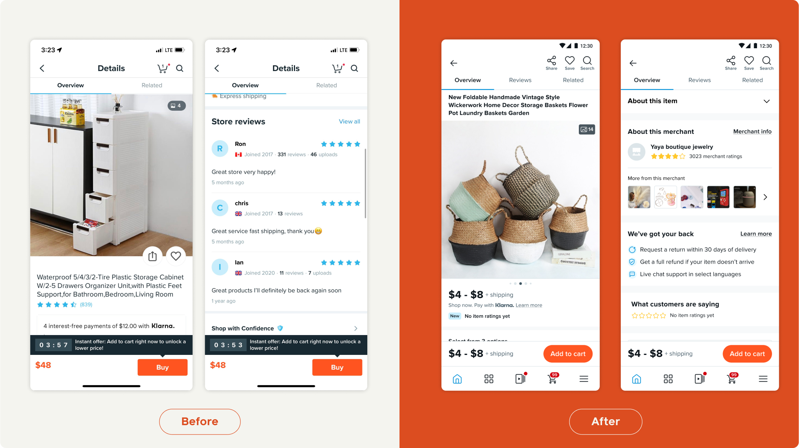

TL;DR
The Product Details Page (PDP) is one of the most important pages for Wish’s customer journey. I led the redesign of this page to increase trust and transparency in the product listings.
The problem
The product details page hasn’t been changed or modified in over 4 years. We know it is problematic and doesn’t convey trust to our users.
One of the biggest threat to trust in our previous version is that on average, the price initially shown on the PDP is only 40% of the real price that the customers will end up paying.
While a low upfront price can make the product more appealing and increase the click-through rate from the feed, many customers abandon their carts after seeing the actual price at checkout, leading to a high cart abandonment rate. This practice also undermines trust in our platform, as some users may perceive it as misleading or deceptive.
Goal
Build Trust & Reduce Anxiety: Establish trust of product, merchant, and overall buying experience
The solution
With the redesign, the true price will be displayed earlier in the shopping journey, eliminating any unexpected surprises for the customers. This approach ensures a more transparent and seamless shopping experience.
With the new design:
Customers will know the price range of every variant before they even enter the Product Detail Page (PDP).
The price for each variant combination will be displayed as early as possible, right below the variant picker.
Shipping costs will be shown immediately after the variant selection is completed, with the final price reflected on the Buy Bar.
The process
Problem deep dive
Ideation
User testing
Delivering
Problem deep dive
While gathering feedback from the design and product teams, I created several iterations on the diagram itself to deliver the concept modal in a straight-forward and simple way. I explored different levels of explicitness and format and ran user interviews to test out which diagram performs the best.
Then, we did in-depth competitive analysis, looking at other product’s PDP pages.
We also did a cross-functional workshop, auditing pain points of the current PDP.
We identified 3 main pain points about the current PDP, all related to trust on our platform:
Transparency on pricing
As illustrated above, on average, the price they see on the PDP initially is only 40% of the price customers will see at checkout, causing a large drop off rate in cart.Biased reviews
For products with no reviews, the store review is instead displayed at the same space with no clear distinction. Therefore, most products has thousands of “reviews” which looks suspicious to many customers.Inaccurate Information
As many of our merchants are from non-English speaking countries, information on the product listings are often auto-translated, or just with keywords that don’t connect as complete sentences. Sometimes information accuracy is lost in translation.
Ideation
For 2 weeks, I met with the working group everyday to discuss different directions with Lo-fidelity prototypes.
User testing
I came up with a high fidelity working prototype to bring to user research:

Working with the user researcher on the research plan, we ended up conducting 8 interviews. 4 with Wish users, and 4 with non-Wish users.to evaluate whether the design elevate trust in existing users and potential new users.
Key research findings include:
Overall, Wish users felt the new PDP design brought Wish’s look-and-feel up to modern app standards, while providing a layout that allowed them to quickly parse through relevant sections about the product.
Most participants were unable to comprehend that they needed to make all variation selections to see available shipping, leaving them unable to comprehend why there was a blank Delivery/Shipping section when they first tap into a product page.
Participants did not observe the final item price update at the top of the PDP when making variation selections. This led some to believe the pricing they were seeing beneath a variation reflected additional cost for the product.
Final designs
I made a few edits based on the feedback we got during user testing.
We reduced initial empty Delivery Shipping cards since it caused confusion for the loading state.
Because the price below variant was sometimes mistaken as additional price, we added in live price reflection on the buy bar at the bottom.
We also removed the logic that displayed store reviews for products without individual product reviews. Instead, we’ve introduced a 'New: No item ratings yet' message to provide a more accurate reflection of the product's review status.
Hand-off
I meticulously prepared and delivered comprehensive specifications, including all edge cases, to ensure a smooth handoff to the engineering team. Given that the PDP supports multiple initiatives, I also ensured that my specifications aligned with and integrated the efforts of other teams.